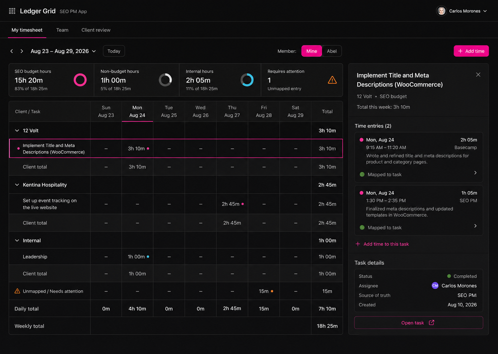

SEO PM App · Selected visual #1
Timesheets Ledger Grid Implementation Plan
Prepared for Claude Code · August 24, 2026
Spec: the approved Ledger Grid visual and product decisions are embedded in this document. Treat the selected visual below as the implementation source of truth.
Selected visual target
The implementation must use this as the visual source: black/charcoal surfaces, thin dividers, white type, muted metadata, and magenta as the primary action/selection color. Do not copy ClickUp branding or capacity-centric reporting.

Product decisions
- One ledger, not two: SEO PM and Basecamp entries are individual
time_logsrows. Their source/provenance is visible but they are not duplicated in separate systems. - Basecamp is event-driven plus recoverable: a Timesheet-entry webhook queues a verified import; scheduled reconciliation repairs missed/deactivated deliveries. Existing SEO PM → Basecamp sync remains intact.
- Weekly is the default: My Timesheet renders the selected Ledger Grid. Daily is a drill-down and Monthly is for client-budget review, not a cramped 31-column table.
- Managers see people and exceptions: Team provides Carlos/Abel/future-member filtering, totals, budget allocation, and unmapped entries. It does not present generic capacity as the core metric.
- Approval is client/month, across all team members: it locks a specific snapshot of eligible SEO time, writes a client activity event, and flags later source changes rather than silently altering the approved total.
- Human mapping is explicit: unresolved Basecamp person/project/task relationships become a review item. Do not guess a client, task, or user.
File structure and contracts
| Area | Files | Responsibility |
|---|---|---|
| Database | migrations/038_timesheet_ledger.sql, schema.sql | Add time source, imported-entry provenance, unique external-entry identity, import-review state, approval snapshots, and RLS/RPC boundaries. |
| Domain | lib/timesheets/ledger.ts, lib/timesheets/review.ts and tests | Pure aggregation, weekly rows, source labels, exception detection, and immutable client-month snapshot calculation. |
| Inbound Basecamp | lib/basecamp/timesheet-webhook-route.ts, app/api/integrations/basecamp/webhook/route.ts | Parse, verify, deduplicate, import/update/void Basecamp timesheet entries without trusting webhook payload state. |
| API/read models | app/api/timesheets/*, lib/supabase/time-logs.ts | Authenticated server-side query and mutation boundaries; no browser-supplied organization/user/provider identity is trusted. |
| UI | app/(dashboard)/timesheets/page.tsx, components/timesheets/* | Ledger Grid, team view, client review inspector, mapping sheet, and approval confirmation. |
| Audit trail | lib/supabase/client-activity.ts, components/workspace/ActivityFeed.tsx | Render client-month approval and post-approval-change events clearly. |
Data model
time_logs (existing canonical ledger)
source: 'seo_pm' | 'basecamp'
basecamp_entry_id: bigint nullable
basecamp_project_id: bigint nullable
basecamp_recording_id: bigint nullable
import_status: 'mapped' | 'needs_review' | 'voided'
imported_at: timestamptz nullable
provider_updated_at: timestamptz nullable
voided_at: timestamptz nullable
timesheet_client_approvals
id, organization_id, client_id, month ('YYYY-MM')
status: 'approved' | 'reopened'
approved_by, approved_at, note
budget_minutes, eligible_minutes, non_budget_minutes
snapshot jsonb
timesheet_approval_entries
approval_id, time_log_id, included_minutes
unique (approval_id, time_log_id)
Add a partial unique index on time_logs(basecamp_entry_id) where the value is not null. This is the hard deduplication invariant that prevents webhook echoes from producing a second time entry.
Implementation tasks
Task 1 — Establish durable ledger provenance
MigrationTDDFiles: Create migrations/038_timesheet_ledger.sql, lib/timesheets/ledger-migration.test.ts. Modify schema.sql, lib/types.ts.
- Write static migration tests asserting additive SQL, a partial unique
basecamp_entry_idindex, RLS, service-only provider fields, and exact schema mirror. - Run
node --test lib/timesheets/ledger-migration.test.ts; expect RED. - Add the columns/types above; preserve existing
statussemantics and represent removed Basecamp entries withimport_status = 'voided', not a destructive delete. - Create
timesheet_client_approvalsandtimesheet_approval_entries; prevent duplicate active approvals for one client/month. - Mirror migration 038 in
schema.sql, run the focused test, thennpm run typecheck. - Commit:
feat: add timesheet ledger provenance.
Task 2 — Build pure ledger and approval-snapshot logic
DomainTDDFiles: Create lib/timesheets/ledger.ts, lib/timesheets/ledger.test.ts, lib/timesheets/review.ts, lib/timesheets/review.test.ts.
- Write failing fixtures for same-day grouping, client/task totals, weekly daily totals, budget-eligible versus non-budget totals, source identity, and unmapped rows.
- Implement
buildWeeklyLedger(logs, weekStart, timezone)returning client groups, task rows, seven local-date cells, totals, and exceptions. - Write failing approval tests: only mapped, non-voided rows qualify; approval records exact included IDs/minutes; late imported changes are detected against the stored snapshot.
- Implement
buildClientMonthSnapshot(logs, budgetMinutes)anddetectPostApprovalChanges(snapshot, logs). Never use current totals to overwrite an approved snapshot. - Run both focused files and
npm test. Commit:feat: add timesheet ledger read models.
Task 3 — Import verified Basecamp timesheet entries
IntegrationSecurityFiles: Create lib/basecamp/timesheet-webhook-route.ts and tests. Modify lib/basecamp/webhook-route.ts, app/api/integrations/basecamp/webhook/route.ts, lib/basecamp/api.ts.
- Write tests for create, update, and delete/trash events; duplicate delivery; a locally-created entry echoed through Basecamp; unknown person; unmapped project; and provider failure.
- Extend webhook routing to recognize Basecamp’s Timesheet-entry resource type. Preserve the existing event receipt table and return retryable failure when provider verification is unavailable.
- Fetch the canonical Basecamp entry with OAuth before writing. Derive project/client, person/member, parent recording/task, date, hours, and description from trusted server state.
- Upsert by
basecamp_entry_id. Existing native rows with that ID are reconciled, not duplicated. Unresolved relationships produce aneeds_reviewrow with no guessed task/client assignment. - Void imported rows when the verified provider entry is absent/deleted; do not delete financial history.
- Run focused tests,
npm test,npm run typecheck, then commit:feat: import Basecamp timesheet entries.
Task 4 — Add reconciliation and mapping recovery
ReliabilityFiles: Create app/api/integrations/basecamp/timesheet/reconcile/route.ts, lib/basecamp/timesheet-reconcile.ts, tests. Modify lib/basecamp/api.ts.
- Write tests for reconciliation over a configured client project, idempotent import, and no cross-organization reads.
- Add a protected manager-only endpoint that reads a bounded date range from Basecamp and passes entries through the same importer used by webhooks.
- Add a small mapping mutation for managers: assign an unresolved row to an authorized client/task/member; record who mapped it and when.
- Expose the reconciliation endpoint to the production scheduler at a 60-minute cadence only after route tests pass. Keep manual “Sync now” available to managers.
- Commit:
feat: reconcile Basecamp timesheet imports.
Task 5 — Ship My Timesheet (Ledger Grid)
UISelected visualFiles: Create app/(dashboard)/timesheets/page.tsx, components/timesheets/TimesheetsShell.tsx, WeeklyLedgerGrid.tsx, LedgerInspector.tsx, and component tests. Modify components/dashboard/Sidebar.tsx.
- Add a Timesheets navigation item and route. Default to the signed-in user and the local containing week.
- Render source-aware but quiet rows: client/task grouping, Sun–Sat local-date columns, daily/weekly totals, a single compact budget summary strip, and one unmapped count.
- Use progressive disclosure: selecting a row opens the right inspector with individual entries, source, description, mapping status, and “Open task”.
- Keep manual add/edit actions on existing hardened time-log routes. Do not duplicate timer behavior in this screen.
- Write browser/component tests for week navigation, selected-row inspector, source labels, and keyboard accessible grid/inspector focus. Commit:
feat: add weekly timesheet ledger.
Task 6 — Add Team Timesheets and exception review
Manager-onlyFiles: Create components/timesheets/TeamTimesheetView.tsx, components/timesheets/MappingReviewSheet.tsx. Create app/api/timesheets/team/route.ts and tests.
- Authorize manager/owner access server-side before returning team rows. Members can only read their own ledger.
- Render Carlos, Abel, and future members as expandable summary rows: tracked, SEO-budget, non-budget, internal, unmapped count, and daily distribution.
- Use the attention rail only for actionable issues: unmapped provider entries, over-budget clients, and post-approval changes.
- Open the mapping sheet from an exception; require an explicit client/task/member selection and show the Basecamp source details before save.
- Test role boundaries and that mapping never permits a cross-organization client/task. Commit:
feat: add team timesheet review.
Task 7 — Add monthly Client Review approvals and activity audit
ApprovalAuditFiles: Create app/api/timesheets/client-review/route.ts, app/api/timesheets/approvals/route.ts, components/timesheets/ClientReviewView.tsx, ApprovalInspector.tsx, tests. Modify lib/supabase/client-activity.ts, components/workspace/ActivityFeed.tsx.
- Write failing server tests for a client/month snapshot: member forbidden, manager allowed, unmapped rows block approval, and over-budget approval requires a manager note.
- Implement client-month queries with budget, eligible/non-budget totals, exceptions, and current approval state. Read budget settings from existing client data; do not create a second client budget source.
- Create approval transaction: lock eligible rows, write approval/snapshot/join rows, and append
timesheet.client_month_approvedactivity with client, month, totals, approver, and note. - Render the selected Client Close-style inspector: reconciliation, teammate breakdown, exceptions, note, exact primary approval copy, and post-approval-change status.
- Add reopen action for managers. It creates an activity event and never edits the prior snapshot.
- Run focused tests, full test suite, typecheck, and lint. Commit:
feat: approve monthly client timesheets.
Task 8 — Verify real workflow and release safely
QARelease- In Basecamp, subscribe the configured project webhook to Timesheet entry and preserve the existing To-do subscription.
- Log one entry as Abel in Basecamp, edit it, and delete it. Verify exactly one SEO PM row follows each change and the row is correctly attributed/mapped or visibly queued for review.
- Log one entry in SEO PM with Basecamp sync enabled. Verify the inbound echo updates the existing row by
basecamp_entry_idrather than creating another row. - Review a client month, approve it, then alter one included entry. Verify the approval snapshot remains unchanged and the client activity feed flags the later change.
- Run
npm test,npm run typecheck,npm run lint, production migration checks, and the deployed webhook-health check before release.
Acceptance criteria
- Every eligible SEO PM and Basecamp entry appears once in the timesheet ledger, with a durable source and provider identity.
- Abel’s Basecamp time imports automatically when project and person mappings exist; otherwise it appears in an actionable exception queue.
- Managers can filter/select a team member; non-managers cannot view another member’s time.
- Weekly Ledger Grid totals agree with the underlying
time_logsledger and distinguish SEO-budget, non-budget, and internal time. - Client/month approval includes all team members, logs an immutable snapshot to client activity, and never silently changes after approval.
- Webhook retries, reconciliation runs, and SEO PM → Basecamp echoes do not create duplicate entries.
Validation checklist
npm test npm run typecheck npm run lint git diff --check # Deploy-time checks supabase migration list vercel inspect <deployment-url> # Exercise the actual Basecamp webhook delivery and inspect its recent deliveries.
Plan self-review: all requested workflow elements map to Tasks 3–7; Task 8 covers production behavior. No client, task, teammate, or provider identity is trusted from the browser or raw webhook payload.